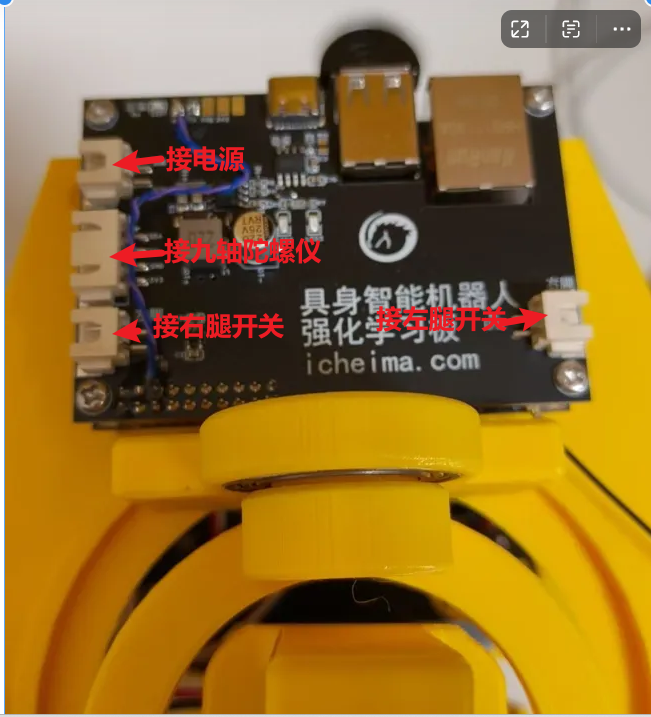

<!DOCTYPE lake>
<p data-lake-id="uef351acc" id="uef351acc"><span data-lake-id="ud39b4ad1" id="ud39b4ad1">从电机剩余的螺丝中，找出4枚</span><span data-lake-id="ucf6fcff2" id="ucf6fcff2" style="color: #DF2A3F">M3x6的</span><span data-lake-id="u50ebc315" id="u50ebc315">螺丝，从底部固定住电路板</span></p><p data-lake-id="uded01e21" id="uded01e21"><br/></p><p data-lake-id="ua26e062b" id="ua26e062b"><span data-lake-id="ud7a7d40f" id="ud7a7d40f" style="color: #DF2A3F">接线口千万别搞错了，搞错烧板子</span></p><p data-lake-id="u3f6eec06" id="u3f6eec06"><span data-lake-id="u1c3ff716" id="u1c3ff716" style="color: #DF2A3F">接线口千万别搞错了，搞错烧板子</span></p><p data-lake-id="u4449b185" id="u4449b185"><span data-lake-id="u81b50da1" id="u81b50da1" style="color: #DF2A3F">接线口千万别搞错了，搞错烧板子</span></p><p data-lake-id="ub095854a" id="ub095854a"></p>